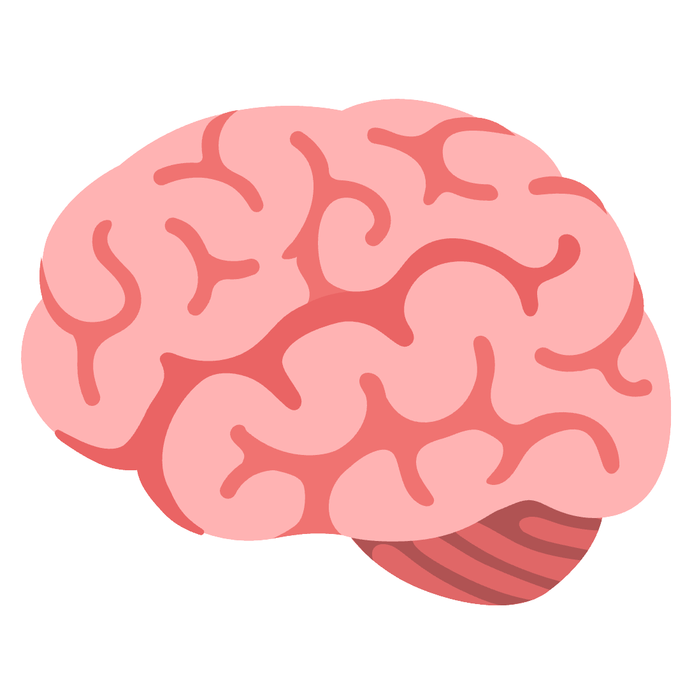
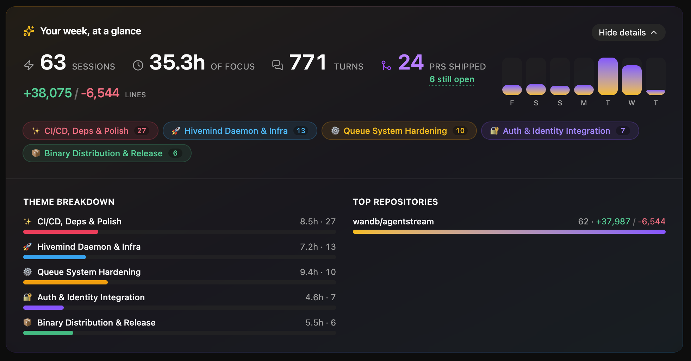
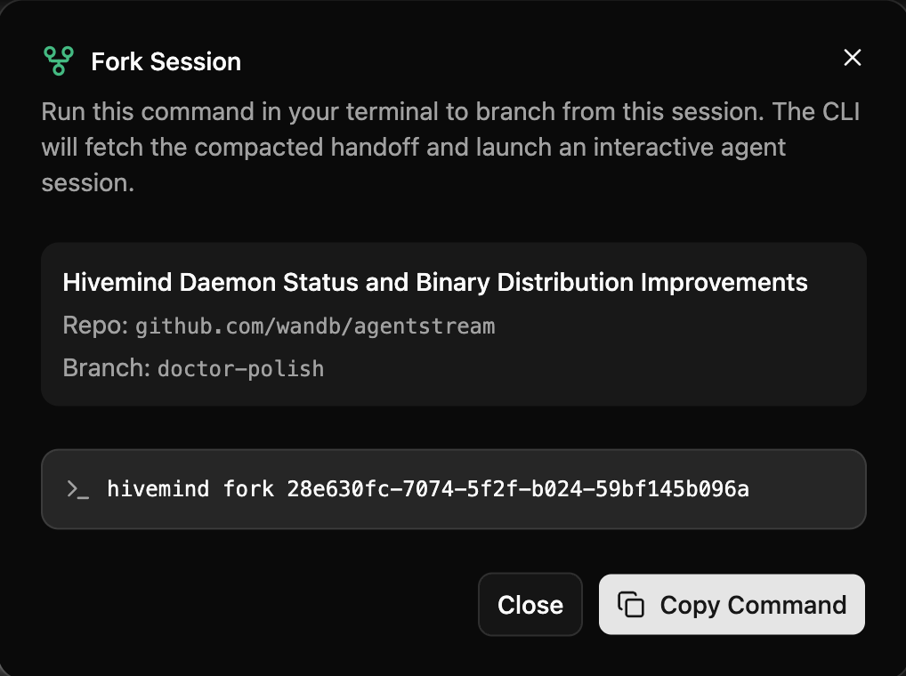

Sessions tied to an org repo follow that repo's GitHub permissions. Sessions on personal or non-git work stay private to you.
Short-lived tokens in your system keychain, rotated automatically. SSO/SCIM for org access. Infra runs in private VPCs.
Secrets are scrubbed on your machine, before anything leaves it.

